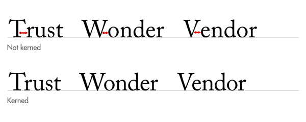
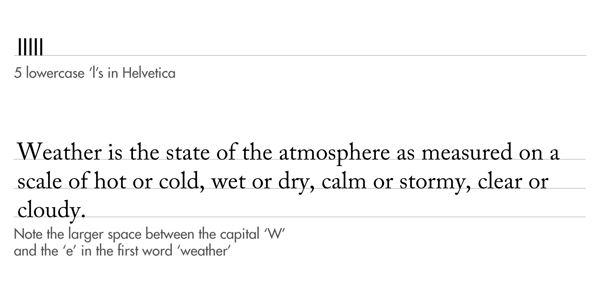

Kerning describes the amount of space between two characters.
There is often confusion between tracking and kerning. While tracking is a global setting that affects how close all the characters are, kerning is more the microscopic view of the space between two letters. Some character combinations might require more kerning than others to avoid collisions (e.g., compare KX versus ll).
Certain characters sit together in a manner that creates and minimizes space. For example, the lower-case l in Helvetica is a rectangle; if you put 5 of them together, (i.e., lllll) the space between each of them will be equal.
Now consider a character like the capital W. The area it takes up is less simple to define as the diagonal of the final line creates space underneath it. With this in mind, once you place the rest of the sentence next to it, this space then makes a noticeable difference when compared to the rest of the characters:
Kerning is the art of adjusting the space between characters so that the eye can flow easily across the copy without being distracted by discrepancies. Remember: good typography is never noticed.